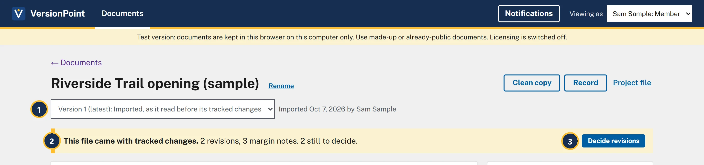
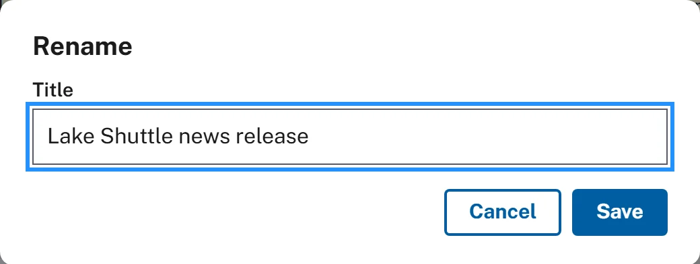
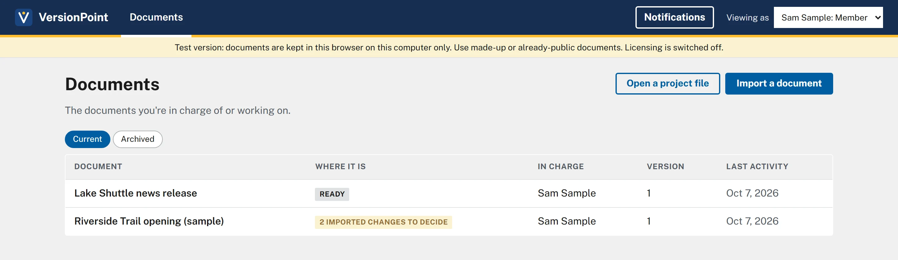

Lesson 16 minutesThe Lake Shuttle
Bring in a draft
Import a Word draft, give it a real title, and read its document page.
Why it matters
VersionPoint keeps the draft exactly as it came in, letterhead and styles included, and every later version is built on it. Bring it in once, and the Draft1, Draft2 files in your inbox stop.
Watch

- The file box. Before you choose a file it says Choose a Word file or PDF and Drop it here, or click to choose. Afterward it shows the file's name and size.
- Title fills in from the file name. Change it here or later with Rename: it names every copy you send.
- The four notes. A Word file keeps its letterhead, headers, pictures and styles. A PDF comes in as text only. If the file already has tracked changes, each one waits for your decision.
- Import brings it in. You'll be in charge of it.
![The document page for Lake Shuttle news release. Callout 1 marks the Rename link beside the title. Callout 2 marks the version list, showing Version 1 (latest): Imported, and the line Imported Oct 7, 2026 by Sam Sample. Callout 3 marks the buttons Send for review, Edit it yourself, Clean copy, Record and Project file. Callout 4 marks the release itself, starting NEWS RELEASE, Office of Example Affairs. Callout 5 marks the card with In charge: Sam Sample, and Also working on it: No one else yet. Callout 6 marks Notes (0), with Notes live here, never in the copies that go out. Callout 7 marks Rounds, with one round: Imported: Lake Shuttle draft.docx, tagged No changes.](assets/l1-document-a.webp)
- The title, and Rename to change it.
- The version list: Version 1 (latest): Imported. Every finished round adds a version here, and you can open any of them.
- What you can do next: Send for review, Edit it yourself, Clean copy, Record and Project file. Lessons 2, 7, 8 and 9 use them.
- The document as VersionPoint holds it. Under it the page says Click a paragraph to see how it came to read the way it does. (lesson 8).
- In charge is you, because you imported it. Also working on it is empty for now (lesson 9).
- Notes (0). Notes live here and never go into a copy (lesson 6).
- Rounds. The import is the first one: Imported: Lake Shuttle draft.docx, No changes.
A draft that already has edits
Program offices often send a draft with their tracked changes and comments still in it. Bring it in as it is. The app's own sample release came in that way:

- Version 1 is the text as it read before its tracked changes. Nothing in the file was accepted for you.
- This file came with tracked changes. Each change is a revision, and the margin notes are kept in the record.
- Decide revisions lists each change to accept or reject. You'll do that in lesson 5.
Try it
Download the practice draft. It's a one-page made-up release, The Lake Shuttle, that you'll use in every lesson from here on.
- Download Lake Shuttle draft.docx from the practice files above. Leave it where your browser saves downloads.
- In the test version, on Documents, choose Import a document.
- Choose the file box, then choose Lake Shuttle draft.docx. The box shows the file name and 4 KB. Click to choose a different file., and Title fills in as Lake Shuttle draft.
- Choose Import. The document page opens. The version list shows Version 1 (latest): Imported, and the line beside it says you imported it today.
- Choose Rename beside the title. Replace the title with Lake Shuttle news release, then choose Save. The new title shows at the top.
- Look at Rounds on the right: one round, Imported: Lake Shuttle draft.docx, No changes.
- Choose ← Documents to go back to the list.
Check your work


Watch out for
Quick check
Pick an answer to see why it is or isn't right. Nothing is scored or sent anywhere.
Question 1
The draft from the program office already has their tracked changes in it. What happens when you import it?
Question 2
Why rename Lake Shuttle draft before you send it out?
Lesson 2 makes a review copy of Lake Shuttle news release for its first reviewer, Riley Planner.